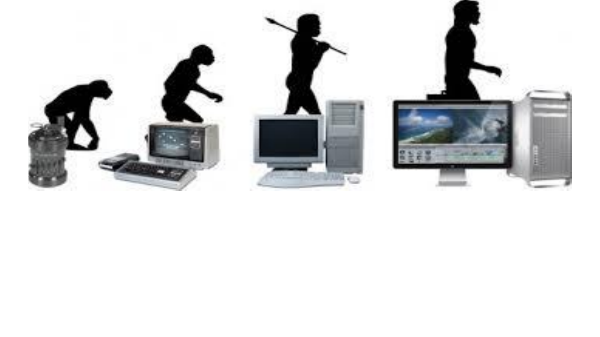

|  |
Na década de 1970, a computação experimentou um período de grande evolução e diversificação, com avanços significativos tanto em hardware quanto em software. O desenvolvimento de supercomputadores se intensificou, com máquinas cada vez mais poderosas capazes de realizar cálculos complexos e processar grandes volumes de dados. Esses computadores eram usados principalmente em pesquisas científicas e militares A consolidação do circuito integrado foi um marco importante, permitindo a miniaturização e a maior eficiência dos componentes eletrônicos. A década viu o surgimento dos primeiros microcomputadores, como o Kenbak, Xerox Alto, Altair, Apple I e Compucolor. Estes foram precurssores dos computadores pessoais que se popularizariam posteriormente. Em 1990, a computação e a informática estavam em um período de transição significativa, marcando a passagem de tecnologias mais antigas para inovações que moldariam o futuro. A evolução dos computadores e da informática a partir desse período é marcada por avanços rápidos e transformadores. |